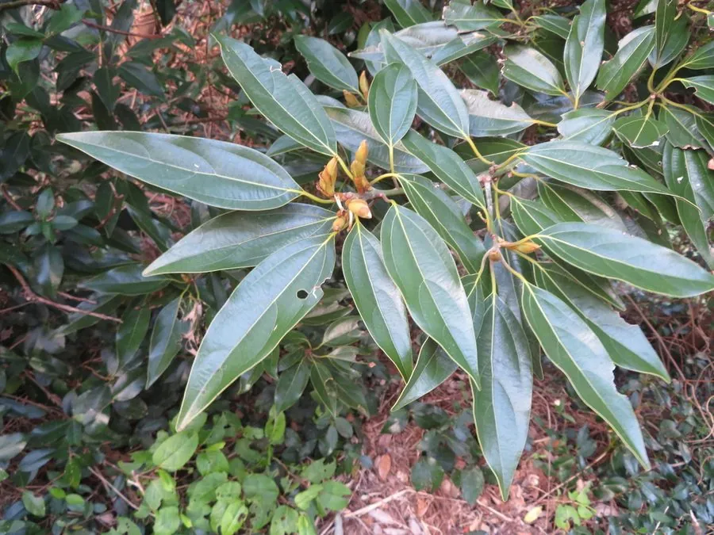

乔木 · 植物界
舟山新木姜子 Neolitsea sericea

樟科新木姜子属常绿乔木，幼枝与嫩叶密被金黄色绢毛，阳光下金光闪动，是浙江舟山群岛的珍稀特色树种。
- 分类
- 门被子植物门纲木兰纲目樟目科樟科属新木姜子属
- 栖息环境
- 海拔 500 米以下的海岛山坡、疏林与灌丛，耐盐雾和海风
- 地理分布
- 中国浙江舟山群岛、宁波、台州及福建、台湾；日本、朝鲜半岛
- 保护级别
- 国家二级重点保护野生植物；IUCN 暂无评估
物种志
舟山新木姜子为樟科新木姜子属常绿乔木，高十至十五米，树皮灰褐色，幼枝和芽鳞密被金黄色绢状柔毛。叶片互生，革质，椭圆形至披针形，表面深绿，幼叶背面密生金黄色绢毛，老叶毛被渐脱落。伞形花序腋生，花被片黄色，花期九至十月；果实椭圆形，成熟时鲜红色，果期翌年四至五月。
该种分布于浙江舟山群岛、宁波、台州沿海以及福建、台湾等地，日本、朝鲜半岛也有分布，多生于海拔五百米以下的山坡疏林和海岛灌丛中。它喜温暖湿润的海洋性气候，耐盐雾、抗风，适宜深厚肥沃的微酸性土壤。树冠整齐、叶色金黄，是优良的海滨风景树种；木材细致，可作细木工用材。由于分布区狭窄、野生个体不多，被列为国家二级重点保护野生植物。
形态与习性
- 株高10–15 m，幼枝被金黄绢毛
- 花期9–10 月，伞形花序腋生
- 果期翌年 4–5 月，果实鲜红色
- 光照喜光，幼树稍耐阴
- 水分喜湿润，耐盐雾海风
- 土壤深厚肥沃的微酸性土
- 主要用途海滨风景树，木材作细木工
趣味知识
- 它的嫩叶背面密生金黄色绢毛，海风吹动时整棵树像镀了一层金。
- 舟山群岛是其最主要的分布中心，当地将其视为海岛标志性植物。
- 本种耐盐雾、抗强风，是海岛绿化和海岸防护林的优良树种。